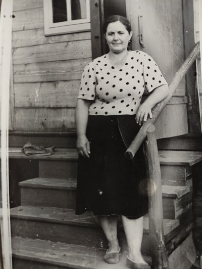

<!DOCTYPE html>
<html lang="en"></html>
<head>
    <meta charset="UTF-8">
    <meta name="viewport" content="width=device-width, initial-scale=1.0">
    <title>Вязанкина_К_Г</title>
     <script src="js/cloc_obrazec.js"></script>
<link rel="stylesheet" href="css/style.css">
</head>
<body>
<header class="header">
        <div class="logo">
            <!-- Логотип сайта -->
            <a href="../../website_HyperText/HTML.html" target="_blank">ИзучениеHTML</a>
        </div>

        <ul class="nav">

      <li><a href="index.html">Главная</a></li>
      <li><a href="Фамилии.html">Фамилии</a></li>
      <li><a href="doc.html">Документы</a></li>
      <li><a href="gallery.html">Галереи</a></li>
      <li><a href="guest.html">Гостевая</a></li>
      <li><a href="Новая.html">Новая</a></li>
      <li><a href="Владимир.html">О сайте</a></li>
        </ul>
        </nav>

        <form class="search" action="index.html" method="get">
            <!-- Поле поиска по сайту -->
            <input type="search" name="q" placeholder="Поиск по сайту">
            <button type="submit">Искать</button>
        </form>
        
          <div class="time">
            <h5>Электронные часы</h5>
            <div style="color: rgb(6, 1, 32); font: 2em sans-serif;" id="clock"></div>
          </div>
    </header>

  
    <h1> Семья Вязанкиных Клавдии Гавриловны и Андрея Даниловича</h1>
    <div class="date_of_birth"></div>

    <p>
    </p>
    <p>Продолжается исследование генеалогии Клавдии Вязанкиной. Интересно<br>восстановить
      годы молодости и есть ли фотографии, и Воспоминания у её<br> саратовских племянников Чуркиных Александра
      и Вячеслава</p>
    <p></p>
    <p>на фотографии Клавдия Адрей Вязанкины</p>
    <p></p>
    <p>В Балаковской энциклопедии есть статья о Вязанкиных Андрее Даниловиче и Клавдии Гавриловны<br>
      о том, как они в 1942 году купили самолет-истребитель для Сталинградского фронта. На нашем сайте<br>
      есть архив, в котором хранятся материалы и по этой теме. </p>
    <p><a href="doc.html">Архив фотографий, документов, указателей</a></p>
    <p></p>
    <p>&nbsp;</p>
    <p><a href="https://geno.ru/uslugi/rodoslovnaya-kniga-v-moskve/">Семейная родословная книга</a></p>


    <div class="articles-list__item-tags">
      <span>Рубрики:</span>

      <a href="/news/tags/43/">Новости на сайте</a>

    </div>

   
        <h1>Вязанкина Клавдия Гавриловна</h1>
        <p>Записал со слов т Анны умерла 30 ноября 2006г</p>

    
</body>

</html>